오늘의 arXiv Top 15
2026-09-28 (월) · cs.CV / cs.LG / cs.RO / cs.CL / cs.AI New submissions 전수 평가
435
신규 논문
93
cs.CV
119
cs.LG
80
cs.RO
54
cs.CL
89
cs.AI
15
정밀 리뷰
분야별 필터
전체 15개 논문 표시 중
1
81점
Causeway: Restoring Task Accessibility for Instruction Switching in VLA Policies
VLA
relevance 9/10
ICRA·IROS·RA-L 계열 양식 (추정)
Robotics (cs.RO)
앞 과제가 남긴 자세 때문에 새 지시를 못 따르는 VLA를, 고정된 policy의 내부 표현에 gradient 방향을 더해 목표 과제의 시작 구간으로 되돌림. LIBERO-Goal에서 OpenVLA-OFT의 지시 전환 성공률을 3.4%에서 64.5%로 올림.
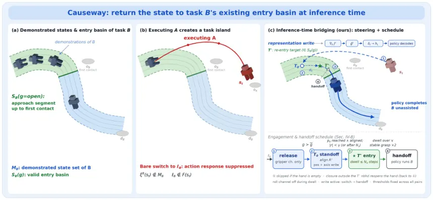
무슨 문제인가
VLA policy는 표준 시작 자세에서는 여러 과제를 잘하지만, 다른 과제를 하던 도중이나 끝낸 뒤에 새 지시를 받으면 자주 실패함. 저자들은 표준 시작에서는 과제 B를 잘하는데 앞 과제 A가 만든 상태에서는 B를 시작하지 못하는 상태를 task island라고 부름. 측정해 보면 물체에 가까워질수록 지시를 바꿔도 decode된 action이 거의 바뀌지 않음. 매번 reset하면 진행 상황을 잃으므로, 실제 연속 사용에서는 이 문제를 피할 수 없음.
어떻게 푸나
Causeway는 학습 없이 inference 때만 개입하는 방법임. 입력은 로봇의 proprioception(말단 위치·자세·gripper 상태)과, 과제 B의 demonstration에서 미리 뽑은 re-entry pose(B를 다시 시작할 수 있는 자세)임. 현재 자세와 re-entry pose의 차이로 위치, 접근축 정렬, roll, gripper 네 채널의 목표 방향을 정함. 채널마다 그 방향으로의 예측 이동량을 objective로 두고, 고정된 decoder를 거꾸로 미분해 표현 공간의 방향을 얻음. 이 방향을 action token의 hidden state에 더하면(representation write), 고정된 policy가 복귀 동작을 직접 decode함. 다른 물체를 쥐고 있으면 먼저 놓고, standoff 지점과 re-entry 구간을 거쳐 잠시 머문 뒤 policy에 제어를 넘김. 개입 일정은 proprioception 기준 threshold로만 정하고 모터 명령은 따로 내지 않음.
결과
- LIBERO-Goal(시뮬레이션 조작 과제 10개)의 서로 다른 물체 과제 쌍 71개, 전환 시점 3가지에서 모델당 5,112회 평가함. 평균 전환 성공률이 π0.5는 26.0%에서 61.6%로, OpenVLA-OFT는 3.4%에서 64.5%로, GR00T N1.5는 9.9%에서 47.5%로 오름.
- 같은 write 장치에 지시 차이 방향을 넣는 CAA(contrastive activation addition)는 OpenVLA-OFT에서 평균 0.8%로, 개입 없이 지시만 바꾼 경우(bare switch)의 3.4%보다 낮음. π0.5에서 같은 복귀 신호를 decode된 action에 직접 더하는 방식은 28.5%에 그침.
- OpenVLA-OFT에서 외부 controller로 같은 자세까지 팔을 옮기는 single-point servo는 47.2%로 Causeway보다 낮음. 손으로 설계한 경로의 servo는 73.7%, 자세를 직접 옮겨 놓는 경우는 79.2%임.
- 실제 xArm 6에서 fine-tuning 후 고정한 π0.5로 과제 쌍 7개를 전환 시점별로 5회씩 평가함. pooled 성공률이 접근 중 전환 42.9%에서 100%로, pre-grasp 전환 14.3%에서 94.3%로, 과제 완료 후 전환 17.1%에서 82.9%로 오름.
한계
목표 과제의 demonstration이 re-entry 구간을 덮어야 하고, 물체 기준 좌표를 알아야 함. 장면이 크게 바뀌거나 쥔 물체의 동역학이 끼면 성능이 내려가고, 모델 구조마다 write layer와 gain을 따로 맞춰야 함. 개입 중 chunk당 지연이 2.5~2.8배 늘고, 실로봇 결과는 전환 시점별 5회의 작은 실험임.
누리랩 연구와의 연결
- 고정된 VLA의 실패 상태를 inference 때 내부 표현 조작으로 회복시키는 사례임. failure recovery와 test-time optimization 연구에서 직접 비교 대상이 됨.
- 지시를 바꿨을 때 action이 얼마나 바뀌는지 상태별로 잰 지도(escape map)는, VLA가 언제 실패할지 미리 판단하는 failure detection 신호로 쓸 수 있음.
2
78점
InternW0-$Δ$: A World Action Model Bridging Predictive Dynamics and Actions with 20K+ Hours of Open Data
VLA
relevance 10/10
Robotics (cs.RO)
video 생성 모델을 robot policy에 붙이되, 미래 장면은 학습 때 정답으로만 쓰고 실행 때는 생성하지 않는 world action model을 2만 3천 시간 규모의 공개 데이터로 학습함. 깨끗한 장면으로 학습하고 무작위 장면에서 평가하는 RoboTwin 2.0 Clean2Random에서 성공률 71.9%를 얻음.
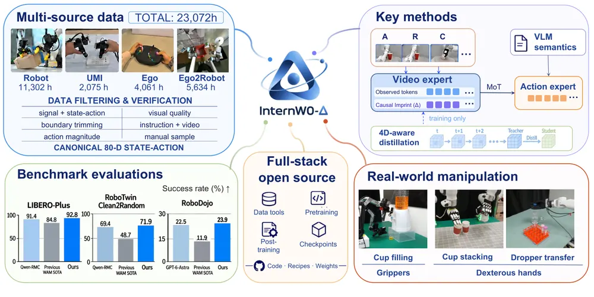
무슨 문제인가
World Action Model(WAM: 영상 예측과 행동 생성을 한 모델에서 같이 학습하는 policy)은 대규모 video 사전학습에서 장면이 어떻게 바뀌는지 배움. 그러나 다음 장면을 잘 예측한다고 해서 바로 좋은 행동이 나오지는 않음. 행동을 정하려면 지시와 관련된 변화가 무엇인지, 물체의 형상과 움직임이 어떤지를 알아야 함. 미래 영상을 실행 중에 매번 생성해서 쓰면 느리므로, 예측 지식을 미래 생성 없이 행동 쪽으로 옮기는 방법이 필요함. 또 로봇, 사람 손 영상, UMI(손에 드는 집게형 수집 장치) 데이터는 형식이 제각각이라 한데 섞어 학습하기 어려움.
어떻게 푸나
InternW0-Δ는 사전학습된 video 생성 모델(Wan2.2-TI2V-5B)을 video expert로, 별도 diffusion transformer인 ActionDiT를 action expert로 둠. 두 expert는 가중치는 따로 두고 attention만 공유하는 Mixture-of-Transformers 블록 30개로 묶음. 두 expert는 가중치를 따로 가지며 attention mask가 걸린 joint self-attention으로만 정보를 주고받음. 입력은 episode 첫 장면, 직전 action chunk 시작 시점 장면, 현재 장면의 세 장과 로봇 상태, 언어 지시임. 고정된 VLM이 현재 장면과 지시를 함께 읽어 action expert에 넣어 줌. Causal Imprint는 video expert 안에 넣은 학습 가능한 token으로, 직전과 현재 장면만 보고 앞으로 생길 장면 변화를 표현하도록 학습함. 정답은 미래 video latent의 인접 프레임 차이와 미래 프레임의 중간 feature임. attention mask 때문에 action token은 미래 프레임 token을 보지 못하고 Causal Imprint만 봄. 여기에 4D 추적 모델 Track4World의 형상·움직임 descriptor를 학습 때만 distillation함. 실행 때는 video expert를 한 번만 돌려 key/value를 저장하고, action expert만 flow matching으로 반복 denoising해 길이 32 step, 차원 80의 action chunk를 출력함. 데이터는 로봇 15개 데이터셋, UMI, 사람 egocentric 영상, 사람 영상을 로봇 동작으로 바꾼 Ego2Robot을 공통 80차원 상태·행동 표현으로 맞춘 뒤 필터링해 씀.
결과
- LIBERO-Plus(카메라·조명·배치 등을 흔든 시뮬레이션 조작 benchmark)에서 흔들지 않은 demonstration으로만 post-training하고 평가함. 성공률 92.8%로 비교 대상 중 가장 높았다고 보고함.
- RoboTwin 2.0(시뮬레이션 양팔 조작 benchmark)에서 깨끗한 장면으로 학습하고 무작위 장면에서 평가한 Clean2Random 성공률이 71.9%임. 깨끗한 장면에서 평가한 Clean2Clean은 90.0%임.
- RoboDojo(기억·정밀도·장기 과제 위주 benchmark)에서 평균 성공률 23.9%를 얻음. 저자는 가장 강한 기존 WAM의 거의 두 배라고 적음. 모든 방법의 성공률이 낮은 benchmark임.
- 실로봇은 집게형 2종, 다섯 손가락 손 2종에 같은 사전학습 checkpoint를 post-training해 배치함. 다섯 손가락 손 배치에서 최적화한 runtime의 왕복 지연은 RTX 5090 한 장에서 평균 152.8 ms로, 기본 runtime보다 5.11배 빠름.
한계
baseline별 표, ablation 수치, 실로봇 과제별 성공률은 본문에서 확인 불가함. 미래 생성 없이 예측 feature를 action에 넘기는 발상은 기존 WAM(world action model)인 Fast-WAM에 선례가 있고, 두 설계를 같은 조건에서 직접 비교한 결과는 확인되지 않음. 코드·가중치·데이터는 공개 예정이라고만 밝힘.
누리랩 연구와의 연결
- 미래 정보를 학습 때 정답으로만 쓰고 추론 때는 관측만 쓰는 world model 활용 방식임. test-time 비용 없이 world model을 VLA에 붙이는 설계의 비교 대상으로 쓸 수 있음.
- 로봇, UMI, 사람 영상을 80차원 공통 상태·행동 표현으로 맞춘 약 2만 3천 시간 데이터와 처리 pipeline을 공개하면 manipulation VLA 사전학습 데이터로 바로 쓸 수 있음.
3
74점
Fast Plans, Faithful Actions: Closing the Planning-Execution Gap in Hierarchical Vision-Language-Action Models
VLA
relevance 9/10
Meta 자체 양식
Robotics (cs.RO)
계층형 VLA에서 planner가 waypoint를 token 하나씩이 아니라 waypoint 하나씩 만들게 하고, executor가 waypoint를 실제로 쓰도록 goal 경로를 더함. 실로봇 plan 생성 시간이 1094ms에서 125ms로 줄고, LIBERO-Long 성공률이 91.0%에서 96.2%로 오름.
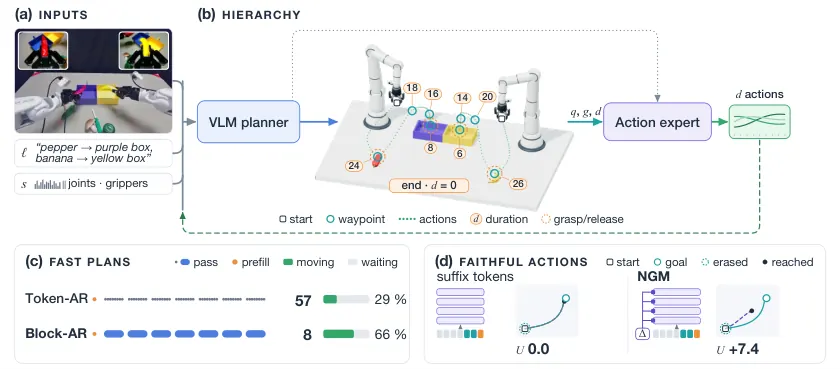
무슨 문제인가
계층형 VLA는 VLM planner가 중간 계획을 만들고 action expert가 그 계획을 연속 행동으로 바꿈. 이 구조가 쓸모 있으려면 계획이 제때 나와야 하고, 행동이 실제로 계획을 따라야 함. 저자들이 π0.5를 고쳐 만든 waypoint 계층 구조에서는 두 조건 모두 지켜지지 않았음. waypoint 7개짜리 계획 하나에 2B 언어 모델 forward pass가 57번 필요했고, 계획의 목표 지점을 지워도 과제 성공률이 낮아지지 않았음.
어떻게 푸나
기준 시스템(Waypoint Token-AR)에서 PaliGemma planner는 waypoint를 목표 관절 위치, gripper 상태, 실행 길이(duration)로 이루어진 token 묶음으로 출력함. 300M flow-matching action expert는 현재 상태와 waypoint를 suffix token으로 받아 duration만큼의 행동을 만듦. Block-AR(waypoint 단위 block autoregressive decoding)은 waypoint 하나를 한 block으로 묶음. block 안에서는 양방향 attention, block 사이에서는 causal attention을 써서 forward pass 한 번에 waypoint 하나를 만듦. NGM(normalized goal modulation)은 현재 상태에서 목표까지의 정규화된 변위와 gripper embedding을 MLP로 바꿔 expert 모든 층의 AdaRMS(조건 벡터로 RMSNorm 크기를 바꾸는 장치) 조건에 더함. 이 경로를 그냥 열면 expert가 이미지를 보지 않고 변위만 적분해 행동을 맞추는 지름길을 배움. 그래서 denoising 초반에만 열리는 phase gate를 걸고, 학습 때 목표에 Gaussian noise를 넣고 확률 0.15로 목표를 지움.
결과
- 계획 하나에 필요한 VLM forward pass 최대 횟수가 LIBERO에서 57번에서 8번으로, 16자유도 양팔 로봇에서 120번에서 8번으로 줄어듦. 실제 Rokae 양팔 로봇에서 plan 생성 시간은 평균 1094ms에서 125ms로 줄고, 팔이 움직이는 시간 비율은 28.7%에서 65.6%로 오름.
- LIBERO-Long(여러 단계를 이어야 하는 시뮬레이션 조작 과제 10개)에서 목표 지점을 지웠을 때의 성공률 하락이 suffix token 방식은 0.0퍼센트포인트, NGM은 7.4퍼센트포인트임. 목표를 지우지 않은 정상 조건의 성공률은 suffix token 방식 91.0%, NGM 96.2%임. 입력 이미지를 바꿨을 때의 행동 변화량은 suffix 방식의 82% 수준으로 유지되어 이미지를 무시하지 않음.
- 제약 없이 goal 경로만 열면, 목표를 바꿀 때의 행동 변화가 flow noise만 다시 뽑을 때 변화의 348%로 커지지만 성공률은 15%에 그침. 민감도만으로는 계획을 잘 쓰는지 판단할 수 없다는 근거로 제시됨.
- LIBERO 4개 suite 평균 성공률은 Block-AR 95.85%에서 NGM 추가 후 98.45%로 오름. 실로봇 과제 3개, 방법당 60회 시도에서 Token-AR 48회, Block-AR 46회, NGM 51회 성공으로 차이는 작음.
한계
π0.5에서 파생한 계층 구조 하나에서만 검증했고, NGM은 π0.5 expert의 AdaRMS 조건에 기대므로 다른 VLA backbone으로 옮길 수 있는지는 확인하지 않았음. 각 변형을 한 번씩만 학습해 학습 간 편차를 알 수 없음. NGM의 gate, noise, dropout 가운데 무엇이 꼭 필요한지는 따로 떼어 보이지 않았고, 코드 공개 주소는 본문에서 확인 불가함.
누리랩 연구와의 연결
- 입력 하나만 바꾸고 나머지와 flow noise를 고정해 행동 변화와 성공률 변화를 재는 개입 실험은, VLA가 어떤 조건을 실제로 쓰는지 따지는 counterfactual 분석 도구로 바로 쓸 수 있음.
- 계층형 VLA에서 planner 출력이 executor에 무시되는 현상은 failure diagnosis에서 실패 원인을 planner와 executor 중 어디로 돌릴지 정할 때 고려할 지점임.
4
74점
GraphWrit3R: End-to-End 3D Scene Graph Writing
3D Vision
relevance 8/10
NeurIPS 2026 채택
Computer Vision and Pattern Recognition (cs.CV)
3D scene graph를 여러 단계 pipeline 대신 0.5B LLM 하나가 point cloud나 Gaussian Splat에서 바로 JSON으로 써 내게 함. 정답 객체를 받지 않고도 3DSSG 전체 평가에서 predicate Recall@5를 Open3DSG의 0.70에서 0.83으로 올림.
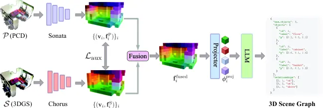
무슨 문제인가
3D scene graph는 장면의 객체와 객체 사이 관계(on, in front of 등)를 node와 edge로 적은 표현이며, 로봇이 아래 물건을 집기 전에 위 물건을 치우는 식의 판단에 쓰임. 기존 방법은 객체 분할, 객체별 feature 추출, 여러 view 집계, GNN이나 LLM 분류를 차례로 거치므로 앞 단계 오류가 뒤로 쌓임. 많은 방법이 평가 때 정답 객체 box나 mask를 입력으로 받고, 일부는 상용 모델 API에 기대거나 장면 하나에 수 분에서 수 시간이 걸림.
어떻게 푸나
GraphWrit3R는 3D 장면을 입력받아 객체 목록(label, 3D 중심, box 크기, yaw)과 관계 triplet(주어 id, 목적어 id, predicate)을 담은 JSON 한 개를 출력함. point cloud는 Sonata encoder가, Gaussian Splat(3DGS)은 Chorus encoder가 같은 voxel grid 위의 token으로 바꿈. 두 입력이 다 있으면 같은 voxel의 token을 평균하고, 하나만 있으면 그 token을 그대로 씀. 2층 MLP가 token을 Qwen2.5-0.5B의 embedding으로 옮기고, LLM이 JSON을 한 token씩 생성함. 학습 초기값은 객체 목록만 JSON으로 내던 SpatialLM의 Sonata, projector, LLM 가중치임. 두 encoder를 맞추려고 같은 voxel의 token 쌍에 InfoNCE, cosine, MSE를 더한 alignment loss를 둠. 이 loss의 gradient는 Chorus에만 흘려, 이미 LLM과 맞춰진 Sonata 쪽으로 Chorus를 끌어옴.
결과
- RIO10(3RScan 실내 스캔 기반 scene graph 평가셋)에서 point cloud만 넣었을 때 predicate R@5가 0.87임. 정답 객체 box를 입력받는 ReLaGS도 0.87, RelationField는 0.82임. 이 방법은 장면당 수 초, 비교 대상은 수 분에서 수 시간이 걸림.
- 3DSSG(3RScan 실내 스캔에 객체와 관계를 단 scene graph 데이터셋) 전체 평가(157개 장면, 548개 부분 장면)에서 predicate R@5가 Open3DSG의 0.70에서 0.83으로 오름. 3DSSG로만 학습하고 ScanNet에 그대로 적용하면 predicate R@5가 Open3DSG의 0.53에서 0.92로 오르고, triplet R@100은 0.85 대 0.84로 비슷함.
- RIO10 ablation에서 gradient를 Chorus에만 주는 비대칭 alignment가 양쪽에 주는 대칭 alignment보다 높음. object R@5는 0.50(대칭, 두 입력 모두)에서 0.65로, triplet R@50은 0.60에서 0.72로 오름.
- 관계를 빼고 객체 검출만 잰 ScanNet20 평균 F1(IoU 0.25 기준)이 SpatialLM의 66.2에서 68.9로 오름. 다만 입력 modality 구성과 Chorus 추가도 함께 바뀌어 관계 supervision만의 효과로 떼어 보인 결과는 아님.
한계
3DGS를 함께 학습했지만 point cloud만 넣을 때가 가장 좋고, 3DGS만 넣으면 RIO10 object R@5가 0.50(3DGS만 입력)으로 내림. 평가 장면은 실내이고 3DSSG 부분 장면은 객체 node가 9개 안팎임. 8k token context를 넘는 큰 장면(객체 약 40개, 관계 약 1,600개 이상)에서는 출력이 잘림. 로봇 planning은 GPT-5.4가 예측 graph를 읽고 계획을 쓰는 정성 예시뿐이며 실로봇 실험과 코드 공개 언급은 없음.
누리랩 연구와의 연결
- 정답 객체 없이 장면당 수 초에 scene graph를 만들므로, scene graph나 semantic mapping을 task planning과 failure diagnosis의 입력으로 쓰는 연구에서 graph 생성기 baseline으로 쓸 수 있음.
- 3DGS 입력 branch가 있어 object-centric 3DGS 표현에서 관계 정보를 뽑는 실험의 출발점이 됨. 다만 현재 3DGS 성능은 point cloud보다 낮음.
5
72점
HIRE: History-Conditioned Interaction Reasoning and High-Rate Execution for Visually Aliased Precision Manipulation
Manipulation
relevance 9/10
ICRA·IROS·RA-L 계열 양식 (추정)
Robotics (cs.RO)
접촉이 중요한 정밀 조작에서 카메라 화면은 같아도 앞서 무슨 접촉이 있었는지에 따라 다음 행동이 달라지는 문제를, 힘 센서 기록을 순서대로 기억하는 느린 판단부와 50Hz 실행부를 묶어 해결함. 실로봇 과제 3개의 모든 단계에서 30회 중 27회 이상 완료함.
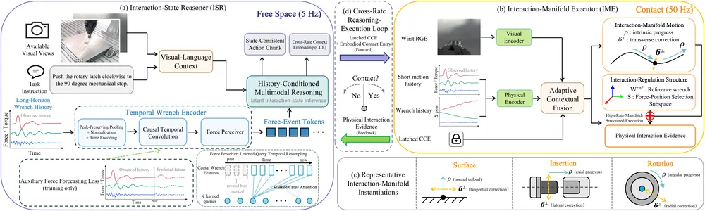
무슨 문제인가
투명 물체는 RGB-D 깊이가 틀려서, 로봇이 윤곽을 따라 살짝 눌러 보고 높이를 잡은 뒤 집어야 함. 이때 표면 근처의 같은 장면이 아직 안 닿은 상태일 수도, 이미 닿은 상태일 수도 있어 계속 누를지 물러날지가 갈림. 저자는 이를 visual interaction-state aliasing(화면은 같지만 앞선 접촉 이력에 따라 숨은 상태와 정답 행동이 다른 상황)이라 부름. 현재 화면만 보는 VLA는 이를 구분하지 못하고, 현재 힘만 보는 policy도 접촉이 끝난 뒤에는 증거가 사라짐. 접촉 기억을 쓰는 방법과 빠른 접촉 제어를 하는 방법은 따로 연구되어 왔음.
어떻게 푸나
HIRE는 5Hz로 도는 판단부 ISR(Interaction-State Reasoner)과 50Hz로 도는 실행부 IME(Interaction-Manifold Executor)로 구성됨. ISR은 π0.5에서 시작하며 입력은 카메라 영상, 언어 지시, 지나간 6축 wrench(힘과 토크) 기록임. 100Hz wrench 기록은 구간마다 힘이 가장 큰 샘플만 남겨 25Hz로 줄임. 이 기록은 causal convolution과 Force Perceiver(학습된 query 8개로 가변 길이 기록을 요약하는 attention 모듈)를 거쳐 force token 8개가 됨. 학습 때는 이 token으로 다음 wrench를 예측하는 보조 loss를 더해 force 경로가 무시되지 않게 함. ISR은 연속 행동과 함께 맥락 요약 벡터 CCE(Cross-Rate Context Embedding)를 내고, 접촉이 시작되면 CCE를 고정해 IME에 넘김. IME는 손목 카메라, 짧은 동작·wrench 기록, CCE를 받아 경로를 따라 나아가는 양과 경로에서 벗어난 것을 바로잡는 양을 따로 출력하고, 목표 wrench와 축별 힘·위치 제어 선택도 함께 냄. 삽입이면 축 방향 전진과 옆 방향 보정, 회전이면 각도 전진과 반지름 방향 보정으로 나뉨. 접촉이 끝나면 그동안 잰 wrench가 ISR의 기록에 쌓여 다음 판단의 근거가 됨.
결과
- 실로봇 과제 3개(투명 물체 집어 놓기, EV 충전 커넥터 꽂고 빼기, 래치 90도 돌리기)를 과제당 30회 돌려 단계별 누적 완료율을 잼. HIRE는 9개 단계 모두 90% 이상임. 커넥터를 빼고 돌아오는 마지막 단계는 HIRE 90.0%, 가장 높은 baseline인 Force Policy 36.7%임.
- 래치 회전의 마지막 복귀 단계 완료율은 HIRE 90.0%, baseline 중 가장 높은 RDP(힘 입력을 쓰는 diffusion policy) 36.7%임. 같은 과제에서 각도 오차(RMSE)는 HIRE 10.05도, Force Policy 12.64도이고, 반지름 방향 오차는 1.20mm 대 1.75mm임.
- 처음 보는 투명 물체 4종(물체당 5회)에서 HIRE는 20회 중 18회 성공함. RDP는 14회, Force Policy는 11회, π0.5는 5회임.
- 화면이 같은 판단 지점에서 force 기록을 순서대로 넣을 때 판단 정확도가 가장 높고, 순서를 섞으면 떨어진다고 그림으로 보고함. 세부 수치는 본문 텍스트에서 확인 불가함.
한계
과제는 3개이고 과제당 시연 300개, 평가 30회이며 시뮬레이션 비교는 없음. 경로 전진과 보정을 나누는 IME 구조만 떼어 본 ablation이 없어서, 정밀도 향상이 그 구조 덕분인지는 따로 확인되지 않음. 과제마다 전진·보정 방향을 사람이 정해 주고, 일반화 실험은 투명 물체 과제 하나뿐임. 코드는 게재 후 공개 예정이라고만 밝힘.
누리랩 연구와의 연결
- 화면만으로는 이미 접촉했는지 구분 못 하는 상황을 force 기록으로 가르는 사례임. robot memory와 failure detection 연구에서 비전 이외 감각 기록을 상태 판단 근거로 쓰는 비교 대상이 됨.
- 느린 VLA 판단과 빠른 접촉 실행을 CCE 하나로 잇는 구조는, VLA 기반 manipulation에서 접촉 단계만 고속 제어로 넘기는 설계를 검토할 때 참고할 수 있음.
6
72점
VisTacAlign: Co-Training Dexterous Policies on Tactile Human and Robot Demonstrations using Visual-Tactile Alignment
Manipulation
relevance 9/10
ICRA·IROS·RA-L 계열 양식 (추정)
Robotics (cs.RO)
사람 시연의 손 모양, point cloud, 촉각 신호를 모두 로봇 쪽 표현으로 바꿔 dexterous 로봇 policy와 함께 학습시킴. Lego 조립에서 로봇 시연 30개만 쓴 policy의 성공률이 10%인데, 정렬한 사람 시연 50개를 더하면 80%로 오름.
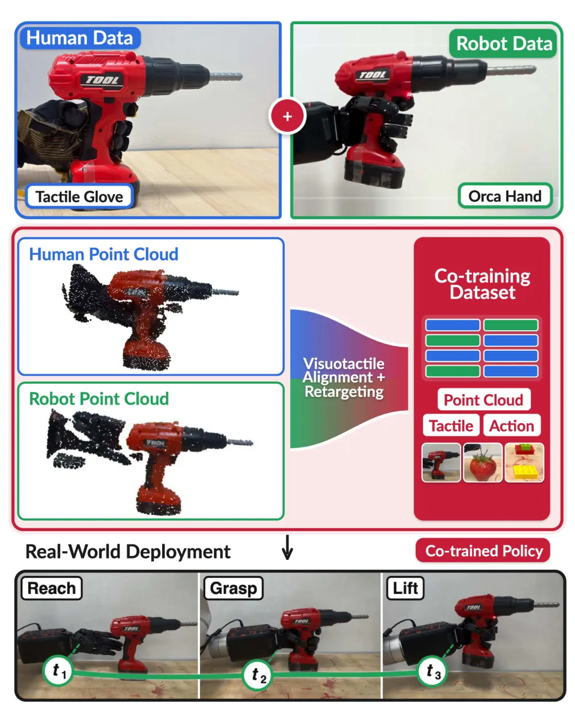
무슨 문제인가
사람 손 시연은 teleoperation보다 2배에서 3배 빨리 모을 수 있어 dexterous manipulation 데이터로 매력적임. 그러나 사람 손과 로봇 손은 카메라에 다르게 보이고, 촉각 장갑과 로봇 손끝 센서는 단위와 배치가 달라 그대로 섞으면 policy가 배포 때 보지 못할 신호를 배움. 기존 co-training 연구는 시각 차이만 다뤘고, 사람 손을 이미지에서 가리거나 로봇 손 mesh 점을 사람 손 위에 덧씌우는 수준이었음. 힘 조절이 필요한 과제에서는 촉각까지 맞추지 않으면 사람 시연을 쓰기 어려움.
어떻게 푸나
VisTacAlign은 사람 시연을 동작, 시각, 촉각 세 갈래로 로봇 표현에 맞춤. 동작은 Rokoko 모션 캡처 장갑과 VIVE 손목 tracker로 잡고, Apple Vision Pro 추적값을 정답 삼아 한 번 학습한 작은 MLP로 손끝 위치를 보정한 뒤 17자유도 ORCA 로봇 손 관절로 retargeting함. 시각은 Rp2d(reprojection to 2D)라는 단계로 맞춤. 두 stereo 영상에서 사람 손을 지우고, retargeting한 자세의 로봇 손 mesh에 로봇 녹화 영상의 픽셀 색을 입혀 합성함. 합성 영상에 stereo 모델 Fast-FoundationStereo를 다시 돌려 point cloud를 만들므로, 로봇 손 점에도 실제 stereo 측정과 같은 잡음과 가림이 생김. 촉각은 장갑과 로봇 센서 값을 손가락당 수직 힘 하나로 줄이고, 짝이 없는 두 힘 분포 사이 entropic optimal transport로 사람 값을 로봇 센서 단위로 옮기는 고정 함수를 과제마다 맞춤. policy는 point cloud, proprioception 상태, 손가락별 촉각 token을 받아 64단계 action chunk를 내는 diffusion transformer(ManiFlow 기반 consistency flow matching)임.
결과
- 드릴 과제(방아쇠를 누른 채 들어 올리기, 20회 시행)에서 로봇 시연 10개와 사람 시연 26개를 함께 쓸 때, 사람 촉각을 정렬해 넣으면 성공률이 55%, 촉각 없이 넣으면 30%임. 로봇 시연 10개만 쓰면 35%여서 촉각 없는 사람 시연은 도움이 되지 않음.
- 같은 과제에서 로봇 시연 26개만 쓴 policy는 50%이고, 촉각을 정렬한 사람 시연 26개를 더하면 70%로 오름.
- Lego 과제(블록을 집어 판 위에 맞춰 끼우고 손 빼기, 20회 시행)에서 사람 50개와 로봇 10개 조건의 최종 성공률이 Rp2d를 쓰면 40%, 쓰지 않으면 10%임. 차이는 집기 단계가 아니라 누르기와 손 빼기 단계에서 생김. 로봇 시연 30개만 쓰면 10%이고, 정렬한 사람 시연을 더하면 80%임.
- 딸기 따기(자석에 붙은 딸기를 뭉개지 않고 떼기, 크기별 10회)에서 큰 딸기 성공률이 촉각 없는 로봇 전용 policy의 0%에서 co-training policy의 70%로 오름. 모든 실험은 실로봇 과제 3개이고 시뮬레이션 실험은 없음.
한계
촉각 정렬 함수를 과제마다 따로 맞추므로 과제별로 로봇 접촉 기록이 여전히 필요함. 손끝을 수직 힘 하나로 줄여 taxel(촉각 센서 소자) 배치와 전단력 정보를 버리고, 과제도 짧고 거의 정적인 것뿐임. learned latent space 정렬과 직접 비교하지 않았고, 비교마다 20회 이하 시행이라 몇 퍼센트포인트 차이는 구분이 어려움.
누리랩 연구와의 연결
- 사람 시연을 로봇 관측 공간으로 옮겨 manipulation policy 데이터를 늘리는 방법이고, 촉각까지 맞춘 점에서 tactile 기반 dexterous manipulation 연구의 비교 대상이 됨.
- 합성한 로봇 손에 stereo를 다시 돌려 센서 잡음까지 맞추는 방식은 object-centric 3D 표현을 쓰는 VLA 학습에서 embodiment 차이를 줄이는 데 참고할 수 있음.
7
72점
RoboMonitor: Label-Efficient Runtime Monitoring of Robot Task Execution via Predictive Representation Learning
Embodied AI
relevance 8/10
ICRA·IROS·RA-L 계열 양식 (추정)
Robotics (cs.RO)
로봇이 지금 어느 단계에 있는지, 실패했는지, 과제를 끝냈는지를 카메라 영상만 보고 판정하는 monitor를, 라벨 없는 policy 학습 데이터로 먼저 pre-training해서 라벨을 적게 쓰고도 학습함. 라벨 달린 episode 52개만으로 단계 판정 정확도 93.09%를 얻어, 100개로 학습한 baseline 모델 Robometer(91.65%)보다 높음.
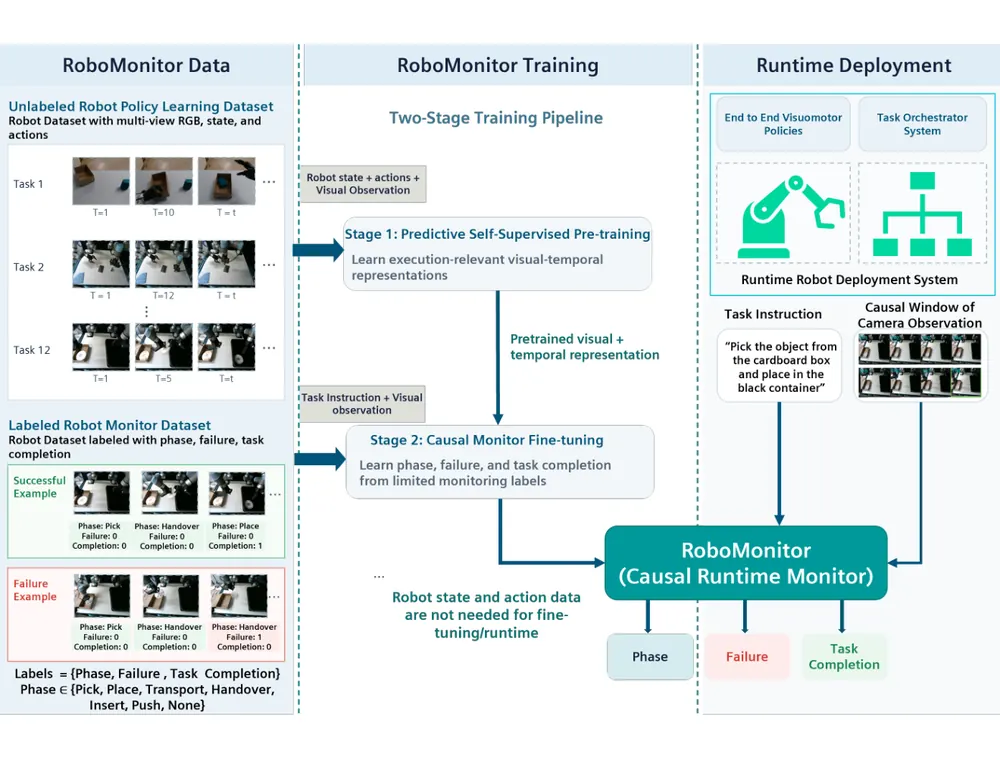
무슨 문제인가
학습된 robot policy는 행동을 내놓을 뿐, 그 행동이 의도대로 진행되는지는 알려 주지 않음. 그래서 다음 skill로 넘어갈지, 복구를 할지, 사람을 부를지 정하려면 별도의 runtime monitor가 필요함. 이 monitor를 학습하려면 프레임마다 단계 경계, 실패 시점, 완료 시점을 적은 라벨이 있어야 함. 그런데 policy 학습용 데이터는 성공 시연이 대부분이고 이런 라벨이 없으며, 실패를 모아 프레임 단위로 라벨을 다는 일은 비용이 큼.
어떻게 푸나
RoboMonitor는 두 단계로 학습함. 1단계에서는 라벨 없는 다중 카메라 궤적 25시간(조작 과제 12개, 로봇 2종)으로 Qwen3-VL-4B의 visual encoder와 시간 맥락을 묶는 context encoder를 pre-training함. 이때 목표는 세 가지임: 현재 영상과 로봇 state, 현재부터 미래 시점까지 내린 명령을 받아 미래 프레임의 feature를 맞히는 것, 두 시점의 맥락 차이로 실행된 명령을 맞히는 것(inverse dynamics), 가린 영역의 현재 feature를 맞히는 것. 정답 feature는 고정된 원래 encoder가 만들며, 픽셀이 아니라 feature 공간에서 예측함. 2단계에서는 이 두 encoder를 고정해 VLM에 붙이고, 과제 지시문과 8 timestep 관측 창을 받아 timestep마다 단계(7개 class), 실패 확률, 완료 확률을 내도록 fine-tuning함. Temporal SFT(시간 축 supervised fine-tuning)라 부르는 이 학습은 창의 마지막 출력만이 아니라 모든 timestep 출력에 라벨을 걸고, 인접 timestep과 겹치는 창 사이에서 예측이 흔들리면 penalty를 줌. state와 action은 1단계에서만 쓰므로, 배치할 때는 지시문과 카메라 영상만 있으면 됨.
결과
- 과제 4개, held-out episode 66개(관측 창 7,022개) benchmark에서 라벨 episode 52개로 학습함. 단계 판정 정확도는 93.09%로, 같은 라벨과 Temporal SFT로 학습한 baseline 모델 Robometer-4B 88.77%, Qwen3-VL-4B 86.76%보다 높음. 100개로 학습한 Robometer(91.65%)와 Qwen3-VL(91.19%)보다도 높음.
- 실패 판정 AP(average precision)는 52개 조건에서 45.87%로 Robometer의 59.39%보다 낮음. 100개 조건에서는 72.01%로 Robometer 67.68%, Qwen3-VL 60.96%보다 높음.
- Qwen3-VL에서 마지막 출력만 학습하는 방식을 Temporal SFT로 바꾸면, 실제 단계는 그대로인데 예측 단계가 바뀌는 비율이 15.23%에서 4.95%로 내림. 같은 비교에서 실패 판정 AP는 30.34%에서 46.37%로 오름.
- skill 순서를 정하고 복구를 발동하는 task orchestrator에 붙여 각 40회 시행함. 시뮬레이션 공구 분류에서는 실패 12건 중 11건을 잡아 모두 복구했고 39회를 완료함. 실제 양팔 UR7e의 릴 포장(한 팔이 릴을 집어 다른 팔에 넘겨 놓는 과제)에서는 실패 18건 중 15건을 잡아 13건을 복구했고 35회를 완료함. 두 환경 모두 잘못된 복구 발동은 0건임.
한계
timestep마다 전체 단계 하나만 내므로, 두 팔이 서로 다른 일을 동시에 하는 경우는 표현하지 못함. offline benchmark는 과제 4개이고 그중 2개만 pre-training 데이터에 들어 있어서, pre-training이 처음 보는 과제에 얼마나 옮겨 가는지는 따로 분리해 보이지 않음. 실패 판정은 라벨이 적을 때 baseline보다 약하고, 출력은 확률뿐이라 무엇이 잘못됐는지 설명하지 않음. 코드 공개 여부는 본문에서 확인 불가함.
누리랩 연구와의 연결
- failure detection/recovery 연구에서 policy 내부에 접근하지 않는 monitor의 비교 대상이 됨. 단계, 실패, 완료를 함께 내서 orchestrator의 복구 발동까지 실로봇으로 잰 사례임.
- action-conditioned feature 예측으로 pre-training한 encoder는 world model의 표현을 실패 판정에 쓰는 방식으로 볼 수 있음. world model을 failure detection에 쓰는 연구의 출발점으로 쓸 만함.
8
70점
TRACKGRAPH: Online Open-Vocabulary 3D Scene Graphs via Image-Space Tracking
Scene Graph
relevance 8/10
ICRA·IROS·RA-L 계열 양식 (추정)
Computer Vision and Pattern Recognition (cs.CV)
open-vocabulary 3D scene graph를 만들 때 물체 mask의 정체를 3D 지도가 아니라 영상 안에서 먼저 추적해 segmentation과 CLIP 계산 횟수를 줄임. Replica에서 모든 프레임을 처리하면서도, 10프레임마다 처리한 ViT-H OVI-MAP보다 처리 시간이 15.1분에서 8.9분으로, GPU memory가 27.2GB에서 8.3GB로 줄어듦.
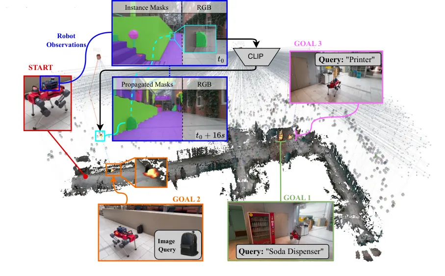
무슨 문제인가
로봇이 처음 보는 건물에서 말로 물체를 찾으려면 물체 단위로 질의할 수 있는 3D 지도가 필요함. 기존 open-vocabulary 3D 지도 방법(ConceptGraphs, OVI-MAP, FindAnything 등)은 들어오는 프레임마다 segmentation을 돌림. 그다음 각 mask를 3D 지도의 segment와 짝지어 정체를 정하므로, 프레임마다 3D association 문제를 풀고 vision-language 모델 추론도 자주 함. 이 비용 때문에 로봇에 싣고 탐사 중에 실시간으로 지도를 만들기 어려움.
어떻게 푸나
TRACKGRAPH는 짧은 시간 동안의 물체 정체 유지를 3D가 아니라 영상 안에서 처리함. 24프레임마다 오는 keyframe에서만 FastSAM으로 class 구분 없는 mask를 만들고 mask마다 CLIP feature를 뽑음. 그 사이 프레임에서는 각 patch가 DINOv3 feature가 가장 비슷한 이전 프레임 patch의 정체를 이어받는 방식으로 mask를 전파함. 이렇게 시간축으로 이어진 2D mask 정체를 source track이라 부름. 다음 keyframe에서 새 FastSAM mask를 전파된 mask와 IoU와 DINOv3 유사도로 짝지어 track을 잇거나 새로 만들거나 끝냄. source track mask는 TSDF(거리값을 voxel에 누적하는 3D 표현)와 mesh에 쌓임. 같은 mesh 꼭짓점을 공유하는 track끼리 묶여 기존 3D scene graph 시스템 Hydra의 segment 노드가 됨. 3D association은 track이 끊겼을 때와 8m 활성 범위 밖으로 나갔던 물체를 다시 볼 때만 씀. 각 segment는 track마다 CLIP feature를 따로 보관하고, 질의 문장이나 이미지와 가장 잘 맞는 하나로 순위를 매김.
결과
- 추적기만 바꾼 비교(Replica, ViT-H, 3cm voxel): 프레임을 버리지 않고 받을 수 있는 최대 입력 속도가 DINOv3 전파 15.0Hz, 매 프레임 FastSAM에 BoT-SORT 추적을 붙인 경우 6.0Hz임. 같은 조건에서 retrieval AP는 6.00 대 6.01로 거의 같음.
- Replica 전체 처리 시간과 GPU memory(A100): ViT-H OVI-MAP 15.1분과 27.2GB 대비 TRACKGRAPH 8.9분과 8.3GB임. 단 TRACKGRAPH는 모든 프레임을, OVI-MAP은 10프레임마다 하나를 처리한 조건임.
- OpenLex3D(물체마다 상위 5개 라벨이 동의어인지 등을 따지는 open-vocabulary 평가) Replica에서 동의어 비율이 0.50으로 표 안에서 가장 높음. 물체 검색 AP는 HM3D에서 2.16으로 ViT-H OVI-MAP의 6.89보다 낮음.
- 4족 로봇의 Jetson AGX Thor에서 7.5Hz로 지도를 만들고, 실내 환경 3곳에서 문장과 이미지로 질의한 물체를 모두 찾아감. 질의 수나 성공률 같은 정량 수치는 본문에서 확인 불가함.
한계
물체 검색 정확도는 OVI-MAP의 두 변형(CLIP ViT-H, SigLIP-L backbone) 모두보다 세 데이터셋에서 낮고, 큰 장면(HM3D)에서는 segment가 물체 전체를 덮지 못하는 경향이 있음. 효율 비교는 baseline마다 GPU와 입력 프레임 간격이 달라 저자도 참고용이라고 밝힘. 드론 실험은 녹화한 드론 데이터로 오프라인 처리만 했고, 4족 로봇 실험 결과는 정성적임.
누리랩 연구와의 연결
- scene graph와 semantic mapping을 로봇 탑재 수준으로 가볍게 만드는 구성임. 물체 단위 robot memory를 두고 언어로 질의하는 실험의 기반 지도로 쓸 수 있음.
- 정체를 영상에서 먼저 잇고 3D 결합은 끊김과 재방문에만 쓰는 순서는, object-centric 3DGS 지도를 온라인으로 키울 때 물체 정체를 관리하는 방법으로 비교해 볼 만함.
9
70점
The Linear Representation Hypothesis for Vision-Language-Action Models
VLA
relevance 8/10
ICLR 양식 (추정)
Machine Learning (cs.LG)
VLA 내부 표현에서 후보 action chunk가 물체 위치를 어떻게 바꿀지 선형으로 읽어 냄. 이 예측을 action head로 미분한 방향으로 표현을 밀면 행동을 조절할 수 있음을 이론과 실험으로 보임. OpenVLA-OFT에서 흰 머그 높이 변화량이 simulator gradient와 같은 12.9mm로 나옴.
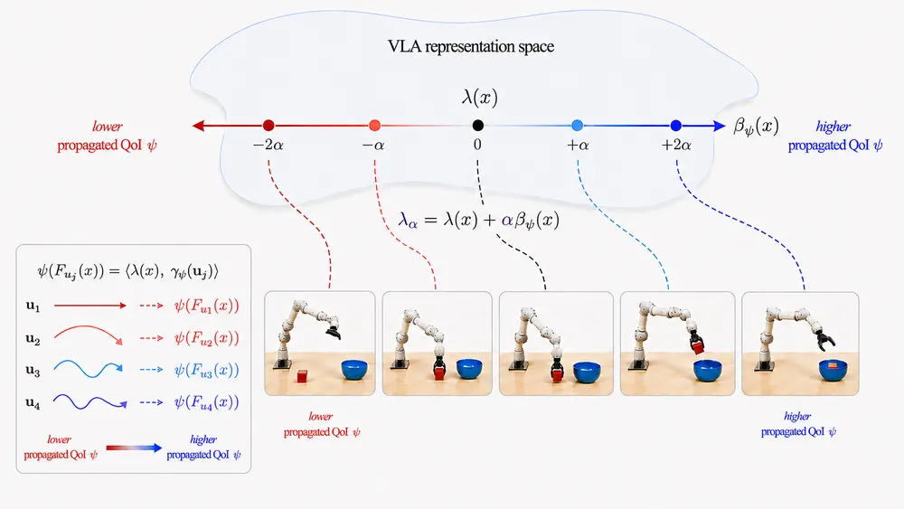
무슨 문제인가
LLM에서는 성별·언어 같은 개념이 표현 공간의 한 방향에 놓인다는 linear representation hypothesis(LRH)로 개념을 읽고(probing) 조절(steering)함. VLA에서 관심 있는 양은 물체 위치나 손과 물체 사이 거리처럼 행동에 따라 바뀌는 물리량(QoI: quantity of interest)임. 지금 상태의 QoI를 읽는 static probe로는 어떤 action을 했을 때 QoI가 어떻게 될지 알 수 없음. VLA는 fine-tuning과 demonstration 수집이 비싸서, 가중치를 건드리지 않고 표현만으로 행동을 읽고 조절하는 수단이 있으면 쓸모가 큼.
어떻게 푸나
먼저 VLA가 조작하는 환경을 action에 선형으로 반응하는 control-affine 동역학계로 모델링하고, action 궤적을 path signature(반복 적분으로 만든 궤적 특징)로 나타냄. Chen–Fliess 전개를 써서, 충분히 큰 공유 표현이 있으면 여러 QoI의 미래값을 표현과 action signature의 내적(action-conditioned linear probe)으로 근사할 수 있음을 존재 정리로 보임. policy 쪽은 action chunk 분포가 signature를 충분통계량으로 갖는 exponential family라고 가정한 signature generalized linear model로 둠. 이 가정과 정확한 linear probe가 있으면 표현을 probe가 정한 방향으로 선형 이동할 때 기대 QoI가 줄지 않음을 증명함. 실제 VLA에서는 표현 공간과 signature 공간이 달라서, probe가 예측한 QoI를 action head를 통해 미분한 방향(Dϕ⊤λψ)으로 표현을 밈. 이 방향은 probe와 모델 자체 head만으로 계산되고 simulator가 필요 없음.
결과
- 정확한 oracle 표현을 만든 평면 navigation 예제에서 steering 강도를 0, 4, 8로 올리면 기대 QoI가 0.000, 0.134, 0.255로 단조롭게 오름. 기울기는 이론대로 QoI 분산과 10^-11 오차로 일치함.
- OpenVLA-OFT를 LIBERO-10(시뮬레이션 장기 조작 과제 모음)의 머그 두 개 옮기기 과제 하나에서 시험함. 한 chunk 뒤 흰 머그 높이를 예측한 held-out R²는 action-conditioned probe가 0.946이고 static probe만 쓰면 0.636임.
- 표현 크기의 최대 4%만 움직이는 같은 조건에서 흰 머그 높이 변화량은 Dϕ⊤λψ가 12.9mm로 simulator gradient(12.9mm)와 같음. head를 거치지 않은 probe 방향은 2.1mm에 그침.
- QoI 7개에 대해 Dϕ⊤λψ는 140개 held-out 상태 중 138개에서 QoI를 단조롭게 올렸고, simulator gradient와 cosine 유사도 중앙값은 0.98~1.00임. 현재 상태만 읽는 static 방향은 여러 QoI를 반대 방향으로 움직임.
한계
실험은 시뮬레이션의 OpenVLA-OFT 하나, 과제 하나뿐이고 실로봇 결과와 성공률은 없음. 표현을 밀며 실제로 에피소드를 돌린 closed-loop 예시도 하나뿐이고, 경로가 몇 cm 치우친 정도이며 policy가 가는 물체 자체는 바뀌지 않음. OpenVLA-OFT는 deterministic이라 단조성 정리가 그대로 적용되지 않고, 유한한 probe 오차에서의 보장도 다루지 않음.
누리랩 연구와의 연결
- action-conditioned probe는 VLA 표현 안에 후보 action의 결과를 예측하는 implicit world model이 있는지 재는 도구로 쓸 수 있음. 실행 전 failure detection이나 test-time action 선택에 바로 붙여 볼 수 있음.
- 가중치 수정 없이 head Jacobian 방향으로 표현을 밀어 거리·높이를 조절하는 방식은, 안전 거리 유지 같은 inference-time steering 연구의 baseline이 됨.
10
68점
Kintsugi-VLA: Turning Failed Robot Rollouts into Recovery Data through Interventional Recoverability
VLA
relevance 9/10
ICRA 2027 (comments 표기)
Robotics (cs.RO)
버려지던 실패 rollout의 중간 상태로 simulator를 되돌리고, simulator 내부 상태를 보는 privileged expert가 아직 과제를 끝낼 수 있는 구간에서 복구 demonstration을 뽑아 VLA를 학습시킴. 같은 복구 구간에서 균일하게 뽑을 때보다 SmolVLA 복구 성공률이 28.8%에서 34.6%로 오름.
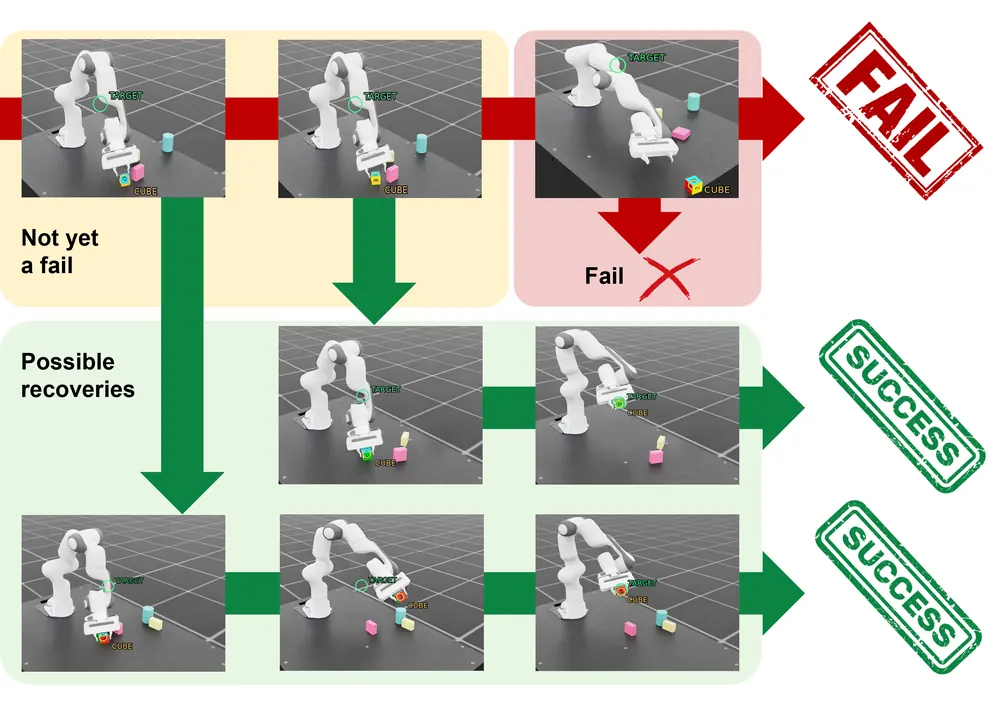
무슨 문제인가
simulation에서 privileged expert로 VLA 학습 데이터를 만드는 파이프라인은 성공한 rollout만 남기고 실패한 rollout은 버림. 그런데 실패 rollout에는 놓친 grasp, 밀려난 물체처럼 정상 궤적에 없는 상태가 들어 있고, policy가 복구를 배워야 하는 상태가 바로 이런 것임. 실패 궤적에서 복구 시작점을 고르는 것도 쉽지 않음. 마지막 실패 상태는 이미 복구가 어렵고, 너무 이른 상태는 정상 동작을 되풀이하는 데이터가 됨.
어떻게 푸나
Kintsugi-VLA는 실패 rollout을 따라 simulator snapshot을 저장함. 각 snapshot으로 simulator를 정확히 되돌린 뒤 고정된 PPO expert를 여러 번 이어 실행하고, 원래 과제를 끝낸 비율을 잼. 이 비율을 expert 기준 recoverability(interventional recoverability)라고 부름. 시도 횟수는 5, 15, 30회로 늘려 가며 Wilson 신뢰구간으로 불확실성을 표시함. 궤적 끝에서 거슬러 올라가며 recoverability 구간 상한이 정해 둔 기준값 아래로 이어지는 복구 불가 구간을 찾고, 그 시작점을 frontier로 정함. 정상 경로에서 벗어난 시점부터 frontier까지를 복구 구간으로 보고, 그 안의 15%, 50%, 85% 깊이에서 시작 상태를 고름(V3). expert가 그 상태에서 성공한 continuation을 scene·wrist RGB와 instruction이 담긴 demonstration으로 저장해 SmolVLA를 학습시키고, recoverability 값과 privileged 관측은 VLA에 주지 않음.
결과
- 실험은 simulated Franka 큐브 들어 옮기기 과제 하나임. 300개 고정 복구 시작 상태에서 상태당 5회 시도한 복구 성공률을 잼. demonstration 수를 맞춘 조건에서 V3는 34.6%이고, 같은 복구 구간에서 균일하게 뽑은 V2는 28.8%, 정상 데이터만 쓴 V0는 12.5%임.
- frame 수를 맞춘 조건에서는 V3가 38.4%, V2가 31.7%임. 같은 복구 성공률에 닿는 데 V3는 V2보다 demonstration을 30.6%, frame을 33.7% 적게 씀. 이 수치에는 snapshot으로 되돌려 expert를 반복 실행하는 recoverability 측정 계산량이 빠져 있음.
- 과제 도중 외란을 넣고 처음부터 끝까지 실행한 성공률은 V3가 63.4%로 V2의 59.5%보다 높음. 물체 배치와 마찰·질량을 바꾼 조건의 복구 성공률은 V2의 25.0%에서 V3의 28.8%로 오르지만, 같은 상태에서 expert의 68.89%에는 크게 못 미침.
- 외란 없는 정상 과제 성공률은 V0의 76.8%에서 V3의 74.7%로 내림. 학습 seed 간 편차는 보고하지 않아 차이의 통계적 유의성은 확인되지 않음.
한계
과제 하나, simulation만이고 실로봇 실험은 없음. 같은 256개 상태에서 독립 학습한 expert 3개의 recoverability 순위 상관(Spearman)은 0.103~0.693으로 달라서, 고른 상태가 expert 선택에 따라 바뀔 수 있음. 현재 selector는 고정 깊이만 쓰고, 측정한 recoverability 값이나 중간에 다시 복구 가능해지는 구간은 상태 선택에 쓰지 않음.
누리랩 연구와의 연결
- 실패 rollout을 복구 학습 데이터로 바꾸는 절차라서 failure recovery 연구의 데이터 생성 단계 baseline으로 쓸 수 있음. VLM 기반 실패 위치 추정과 비교한 실험은 없으므로 그 비교가 바로 해볼 실험임.
- 같은 상태에서 여러 번 이어 실행해 성공 확률을 재는 방식은 counterfactual rollout을 world model 대신 simulator로 하는 셈임. world model 기반 recoverability 추정의 정답 신호로 쓸 수 있음.
11
68점
VLaRL: Augmenting Vision-Language-Action Models with Simulation-Trained Latent-Conditioned Residual RL
VLA
relevance 9/10
ICRA·IROS·RA-L 계열 양식 (추정)
Robotics (cs.RO)
고정된 VLA의 행동에 작은 보정 행동을 더하는 residual policy를 시뮬레이션에서만 학습하고, VLA 내부 latent를 시뮬레이션과 실제 사이의 연결 고리로 써서 실로봇에 그대로 옮김. VLA 백본 Flower의 버튼 누르기 실로봇 성공률이 67.5%에서 100.0%로 오름.
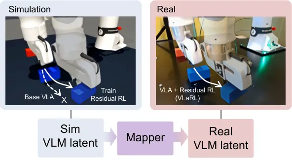
무슨 문제인가
VLA는 지시에 맞는 대략적인 행동은 잘 만들지만, 접촉 위치나 정렬이 조금만 어긋나도 접촉이 많은 과제에서 실패함. VLA를 고정하고 보정 행동만 RL로 배우는 residual RL이 이런 오차를 고칠 수 있지만, 실로봇에서 RL을 돌리는 것은 비용이 크고 위험함. 시뮬레이션에서 배우려면 시뮬레이션 영상과 실제 영상의 차이를 넘어야 함. 이미지를 입력으로 쓰면 이 차이에 그대로 노출되고, 물체 pose를 입력으로 쓰면 따로 pose 추정기와 과제별 상태 정의가 필요함.
어떻게 푸나
VLaRL(VLA Latent-Conditioned RL)은 과제마다 실제 demonstration 32개로 VLA를 fine-tuning한 뒤 고정함. 같은 demonstration에서 6D 물체 pose 추정 모델 FoundationPose로 물체 위치를 복원해 MuJoCo에 비슷한 장면(digital twin)을 만듦. 다음으로 시뮬레이션 영상에서 나온 VLM token을 실제 영상의 token 분포 쪽으로 옮기는 mapper(Transformer encoder 4층)를 학습함. 시뮬레이션과 실제 프레임이 정확히 짝지어지지 않으므로, 궤적 진행도를 비용에 더한 optimal transport(Sinkhorn)로 두 분포를 맞춤. 그다음 VLA와 mapper를 고정하고 residual policy를 시뮬레이션에서 TD3로 학습함. residual policy의 입력은 mean-pooling한 VLM latent, VLA의 행동, 말단 장치 자세, 손목 힘 센서 값이고 출력은 7차원 보정 행동임. 실제로 실행하는 행동은 VLA 행동에 보정 행동의 0.1배를 더한 값임. 실로봇에 배포할 때는 실제 latent를 바로 넣으므로 mapper를 쓰지 않고, 실세계 RL이나 온라인 적응도 하지 않음.
결과
- Franka 로봇 실험에서 과제 4개(버튼 누르기, 블록 밀기, 컵 쌓기, 서랍 밀어 넣기)와 VLA 백본 2개(Flower, GR00T N1.7)로 8개 조합을 조건당 40회씩 평가함. 8개 조합 모두에서 고정 VLA보다 성공률이 오름. Flower 블록 밀기는 22.5%에서 50.0%로, GR00T 컵 쌓기는 17.5%에서 45.0%로 오름. Flower 컵 쌓기는 65.0%에서 70.0%로 오름폭이 작음.
- Flower에서 mapper를 빼고 정렬 안 된 시뮬레이션 latent로 학습하면 블록 밀기와 컵 쌓기의 실로봇 성공이 40회 중 0회임. 전체 VLaRL은 각각 50.0%와 70.0%임.
- Flower에서 VLM latent 입력만 빼고 VLA 행동, 자세, 힘은 남기면 실로봇 성공률이 버튼 누르기 100.0%에서 70.0%로, 블록 밀기 50.0%에서 20.0%로 내림.
- 학습에 없던 물체(별·삼각형 블록, 새 색의 컵)에서도 추가 학습 없이 블록 밀기가 고정 VLA 40.0%에서 VLaRL 57.5%로, 컵 쌓기가 55.0%에서 62.5%로 오름.
한계
mapper 학습에는 과제마다 digital twin을 복원해 만든 시뮬레이션과 실제의 대응 궤적이 필요하고, mapper는 백본마다, residual policy는 과제마다 따로 학습함. mapper는 영상 차이만 다루고 접촉 동역학이나 마찰 차이는 다루지 않음. 실제로 시뮬레이션과 실로봇의 경향이 어긋나는 과제가 있음. 과제 4개, 물체 위치 ±3cm 범위의 실험이고, 기존 residual RL 방법과의 직접 비교는 본문에서 확인 불가함.
누리랩 연구와의 연결
- VLA를 건드리지 않고 시뮬레이션에서 배운 보정만 얹는 구조라서, failure recovery를 VLA 위의 작은 보정 모듈로 구현하는 연구에서 baseline으로 쓸 수 있음.
- VLA 내부 latent를 sim-to-real 연결 고리로 쓰고 optimal transport로 분포를 맞추는 방식은, VLA latent 위에서 failure detection이나 test-time 보정을 시뮬레이션으로 학습할 때 그대로 가져다 쓸 수 있음.
12
67점
Praxis: Distilling Physical Interaction Priors from Egocentric Videos for Generalizable Whole-Body Manipulation
Manipulation
relevance 8/10
IEEE 학술지 계열 양식 (추정)
Robotics (cs.RO)
사람이 robot 머리 카메라로 찍은 RGB-D 시연 영상 한 편에서 손과 물체의 상대 위치를 뽑아, 걸어 다니는 humanoid가 이동 후 자세를 맞추고 dexterous hand로 조작하게 함. 실로봇 과제 5개 평균 성공률 76.97%로 가장 강한 baseline인 기존 one-shot 모방 방법 YOTO의 66.67%보다 높음.
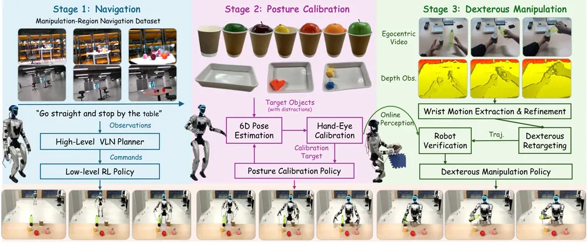
무슨 문제인가
Humanoid는 몸을 옮겨 작업 공간을 넓힐 수 있지만, 물체 앞에 도착해도 팔이 닿는 자세가 아니면 조작을 시작하지 못함. 도착한 뒤에도 물체 위치와 접촉 상태가 매번 달라지므로 손가락 단위의 정밀한 접촉을 지켜야 함. 기존 whole-body manipulation은 teleoperation 데이터나 RL로 과제마다 policy를 학습하므로 새 과제마다 데이터 수집과 재학습이 듦. 사람 영상에서 배우는 기존 one-shot 방법은 고정된 팔과 parallel gripper, 또는 상체만 움직이는 설정에 머묾.
어떻게 푸나
Praxis는 이동, 자세 보정, 조작의 세 단계를 하나의 whole-body balance controller(HOMIE) 위에서 차례로 실행함. 이동 단계에서는 언어 지시를 받아 이동하는 VLN(vision-language navigation) model NaVILA를 실제 이동 궤적 150개로 LoRA 조정해, "테이블 옆에 멈춰" 같은 지시를 받고 조작하기 좋은 위치에 멈추게 함. 자세 보정 단계에서는 6D pose estimation으로 잡은 물체 위치가 몸 기준 앞 0.4m, 좌우 중앙에 오도록 높이와 평면 속도를 closed-loop로 조정함. 0.4m는 팔의 IK 오차가 작게 유지되는 가장 먼 앞쪽 거리임. 조작 단계의 입력은 사람이 robot 머리 카메라로 찍은 RGB-D 영상 한 편임. 손 mesh 복원으로 손목 궤적을, hand landmark로 손가락 관절각을 뽑고, 움직임이 크게 바뀌는 순간만 keyframe으로 남김. 각 keyframe에서 물체 기준 손 자세를 저장해 두고, 실행 때는 새로 추정한 물체 pose에 이 상대 자세를 곱해 손 목표를 다시 계산함. 손가락을 오므려 물체를 쥔 뒤에는 tactile 센서로 접촉을 확인하고 미끄러지지 않을 만큼 grip force를 조절함. VLM(Qwen3.8-27B)이 keyframe마다 현재 장면과 시연 장면을 비교해 성공, 실패, 불확실 중 하나로 판정함. 실패로 판정되면 물체 pose를 다시 추정하고 첫 keyframe부터 다시 시도함. 출력은 양팔 end-effector pose와 손 motor 명령이고, 과제별 조작 policy 학습은 없음.
결과
- 실제 Unitree G1에서 물체 위치·높이·방향, 조명, 배치, 방해 물체를 바꾸며 과제 5개(컵 건네기, 물 따르기, 서랍 당기기, 뚜껑 열기, 피펫 조작)를 과제당 33회 평가함. 5개 과제 평균 성공률이 Praxis 76.97%, 같은 tactile 센서를 붙인 YOTO 66.67%, 상체만 움직이는 one-shot 모방 방법 OKAMI 37.58%, 과제당 teleoperation 150개로 fine-tuning한 π0.5 30.91%임.
- 피펫 조작에서 집기 성공은 Praxis 28/33, YOTO 26/33으로 비슷함. 첫 버튼 누르기는 23/33 대 16/33으로 차이가 커지고, 전체 성공률은 63.64% 대 45.45%임.
- Praxis에서 tactile feedback을 빼면 평균 성공률이 76.97%에서 63.64%로 내림. 피펫 조작에서 가장 크게 내려 63.64%에서 42.42%가 됨.
- 3m 거리에서 옆으로 미는 방해를 줄 때 자세 보정을 쓰면 과제 완료가 10회 중 1회에서 7회로 오름. 물 따르기 과제는 이동과 자세 보정 중 방해를 줘도 70%, 조작 중 방해를 줘도 90% 성공함.
한계
모든 평가는 실로봇 과제 5개이고 방해·거리 실험은 조건당 10회뿐임. 시연 영상은 G1의 팔이 닿는 범위 안에서 robot 머리 카메라로 찍은 것이라, 인터넷 영상처럼 시점과 체형이 다른 영상에는 아직 쓰지 못함. 다른 물체로 옮기는 것은 모양과 크기가 비슷한 물체에 한정되고, VLM 판정의 정확도는 따로 재지 않음.
누리랩 연구와의 연결
- keyframe마다 VLM이 시연 장면과 현재 장면을 비교해 실패를 판정하고 재시도하는 구조는 failure detection·recovery 연구의 실로봇 비교 대상으로 쓸 수 있음.
- 물체 기준 상대 자세를 저장해 새 pose에 다시 붙이는 방식은 object-centric representation을 dexterous manipulation과 one-shot imitation에 연결하는 단순한 기준점이 됨.
13
64점
Enabling a Unified Cross-Domain Representation for Two-Finger Gripper Manipulation via Interaction-Centric Modeling
Manipulation
relevance 8/10
ICRA·IROS·RA-L 계열 양식 (추정)
Robotics (cs.RO)
장면을 로봇 겉모습 대신 gripper 기준 좌표계에서 gripper, 쥔 물체, 목표 물체 세 가지로만 표현해, 시뮬레이션 양팔 로봇으로 배운 policy를 다른 실제 로봇 두 대에 추가 학습 없이 옮김. RoboTwin2.0 무작위화 환경 평균 성공률은 46.1%로 비교한 방법 중 가장 높음.
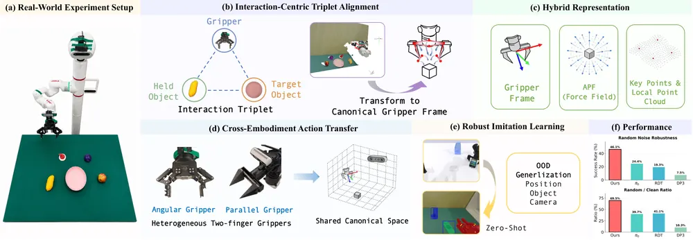
무슨 문제인가
카메라 영상으로 배우는 imitation learning policy는 로봇 팔과 gripper의 모양이 관측에 섞여 들어가므로, 배운 로봇 한 대에 맞춰짐. 그래서 gripper, 카메라 위치, 팔 개수가 바뀌면 같은 policy를 그대로 쓰기 어려움. 저자는 과제의 뜻과 로봇의 시각적 생김새가 한 표현 안에 엉켜 있는 것이 cross-embodiment transfer를 막는 주된 원인이라고 가정함.
어떻게 푸나
입력은 언어 지시, 고정 카메라 한 대의 RGB-D 영상, gripper 크기(길이·폭·높이), end-effector pose임. 먼저 VLM(GLM-4.6V)이 지시와 RGB 영상을 보고 현재 subtask를 정하고, gripper·쥔 물체·목표 물체(interaction triplet)의 bounding box를 찾음. VLM은 5 step마다 한 번만 부르고, 그 사이에는 SAM 2.1이 mask를 이어 추적함. mask 영역을 depth로 3D 점으로 올린 뒤, calibration 정보로 gripper 끝을 원점으로 하는 좌표계로 옮김. 이 좌표계에서 두 가지 특징을 만듦: 목표는 끌어당기고 나머지는 밀어내는 artificial potential field(APF)를 gripper 크기로 정한 keypoint 8개에서 잰 값, 그리고 쥔 물체와 목표 물체의 점 256개씩임. 약 30M parameter의 Flow-Matching Transformer가 이 특징과 subtask 문장, gripper pose를 받아 7-DoF action chunk(pose 증분과 gripper 개폐)를 출력함. 팔마다 입력 구역을 따로 두므로, 한 팔 로봇에 옮길 때는 쓰지 않는 팔의 구역을 초기 상태로 고정함.
결과
- RoboTwin2.0(양팔 시뮬레이션 조작 benchmark) 25개 과제에서 과제당 깨끗한 demonstration 50개로 학습함. 장면을 무작위로 바꾼 평가의 평균 성공률이 46.1%로, VLA인 π0 24.4%와 BagelVLA 28.4%, 점군 기반 policy DP3-W 7.5%보다 높음. 깨끗한 평가에서는 66.3%로 DP3-W 73.1%, BagelVLA 85.5%보다 낮음.
- 시뮬레이션 ALOHA-AgileX 양팔 데이터로만 학습한 policy를 실제 한 팔 로봇 DOS-W1과 Jaka에 추가 학습 없이 올림. Shake Bottle 과제는 시뮬레이션 97%에서 DOS-W1 16/30, Jaka 가까운 시점 15/30, Jaka 새 시점 9/30으로 내림. Place Phone은 시뮬레이션 32%, 실로봇 6/30 이하임.
- 실제 Jaka에서 과제 4개를 실로봇 demonstration 50개로 학습하고 카메라를 35cm, 45도 옮겨 평가함. DP3와 π0.5는 모든 과제에서 0/10이고, 이 방법은 집어 옮기기 2/10, 밀기 3/10, 그릇 쌓기 2/10을 유지함. 붓기 과제는 모두 0/10임.
- 분할 범위를 바꾼 ablation에서 무작위화 성공률은 장면 전체 점군 4.2%, 모든 물체 분할 6.6%, VLM subtask 기준 triplet 분할 35.1%임. 저자는 배경 제거보다 subtask 단위의 의미 분할이 일반화를 만든다고 해석함.
한계
실로봇 평가는 조건마다 10회 또는 30회이고, 로봇 간 전이 실험에는 비교 대상이 없음. 카메라 calibration과 작업 공간 맞춤이 필요하며 IK 실패가 가끔 생긴다고 저자가 밝힘. 단일 고정 시점 RGB-D와 VLM 판단에 기대므로 가려짐이 많거나 배경과 색이 비슷한 과제는 평가에서 뺐고, 두 손가락 gripper 외의 손에서는 실험하지 않았음. 코드 공개 여부는 본문에서 확인 불가임.
누리랩 연구와의 연결
- gripper 기준 좌표계에서 쥔 물체와 목표 물체만 남기는 표현은 object-centric 표현과 cross-embodiment VLA 입력 설계의 비교 대상이 됨.
- VLM이 subtask와 상호작용 대상을 정하고 작은 policy가 행동을 내는 구조라서, subtask 진행 상태를 failure detection 신호로 쓰는 연구와 이어 볼 수 있음.
14
54점
LiTe-GS: Oracle-Efficient Next Best View Selection for 3D Gaussian Splatting
3D Vision
relevance 6/10
Computer Vision and Pattern Recognition (cs.CV)
3DGS 학습에 쓸 다음 카메라 시점을 고를 때, 후보 전체 대신 매번 무작위로 뽑은 일부 후보만 Fisher information으로 채점해 계산 횟수를 줄임. Blender Setup 2에서 채점 횟수가 350회에서 200회로 줄고 PSNR은 25.25에서 25.31로 비슷하게 유지됨.
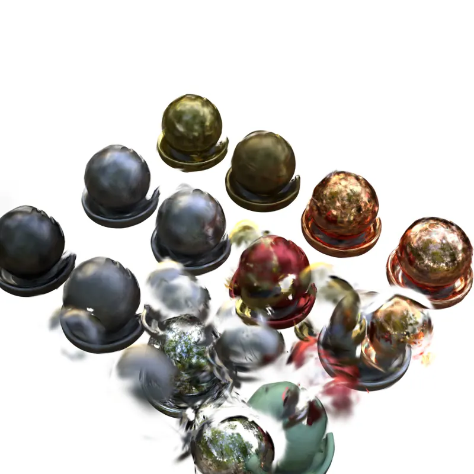
무슨 문제인가
3D Gaussian Splatting(3DGS)을 적은 이미지로 학습하려면 후보 시점 중 정보가 많은 시점을 골라 찍어야 함(next best view, NBV). FisherRF와 POP-GS는 후보 시점마다 Fisher information으로 불확실성이 얼마나 줄어드는지 계산해 greedy하게 고름. 이 방식은 시점 하나를 고를 때마다 남은 후보 전부를 다시 채점하므로, 후보 수 M과 고를 시점 수 K에 비례해 계산이 늘어남. 후보가 많은 로봇 탐사 상황에서는 이 채점 비용이 병목이 됨.
어떻게 푸나
LiTe-GS는 POP-GS의 목적함수와 근사를 그대로 씀. 목적함수는 선택한 시점들의 Fisher information을 더한 행렬의 log-determinant이고, 행렬은 Gaussian 하나 안의 파라미터 관계만 남기는 block-diagonal로 근사함. 후보 시점 하나의 정보 이득을 한 번 계산하는 것을 oracle evaluation이라 부름. 시점을 하나 고를 때마다 남은 후보 중 (M/K)·log(1/ε)개만 무작위로 뽑음. ε은 뽑는 후보 수와 근사 정확도를 맞바꾸는 조절값으로, 클수록 적게 뽑음. 뽑은 후보 그 안에서 저장해 둔 이득 값으로 우선순위 큐를 만들어 필요한 후보만 다시 계산함(lazy greedy). 고른 시점의 정보를 누적 행렬에 더하고 다음 선택으로 넘어감. 전체 oracle 횟수는 O(M log(1/ε))로 K와 무관하고, 목적함수가 단조·submodular이면 기대값 기준 최적의 1−e^−(1−ε)배 이상을 보장함. 선택 이후의 3DGS 학습 과정은 바꾸지 않음.
결과
- Blender(합성 물체 장면 8개 모음) 3개 장면 평균, Setup 2(5장에서 시작해 4장씩 추가해 21장까지)에서 oracle 횟수가 POP-GS 350회에서 LiTe-GS 200회로 42.86% 줄어듦. 같은 조건의 PSNR은 LiTe-GS 25.31, POP-GS 25.25이고 LPIPS는 0.089 대 0.090으로 비슷함.
- Mip-NeRF 360(실제 촬영 장면 모음) Setup 3에서 oracle 횟수가 522회에서 302회로 42.15% 줄고 PSNR은 LiTe-GS 19.01, POP-GS 18.82임. Setup 1에서는 LiTe-GS의 PSNR이 17.54로 POP-GS 17.72보다 조금 낮음.
- Blender Ship 장면에서 K를 3에서 6으로 늘리면 POP-GS의 oracle 횟수는 275회에서 549회로 늘지만 LiTe-GS는 210회에서 208회로 유지됨. K=6에서 ε을 0.1에서 0.6으로 키우면 oracle이 208회에서 44회로 줄고 PSNR은 25.07에서 23.75로 내림.
- 매 단계 다시 뽑는 대신 처음 뽑은 후보 subset을 고정하는 비교 방법(SSG)과 비교한 결과는 엇갈림. Ship 장면 ε=0.25에서는 SSG가 PSNR 25.40으로 LiTe-GS 25.04보다 높고, Garden 장면에서는 LiTe-GS가 대체로 높음.
한계
효율은 oracle 호출 횟수로만 쟀고 실제 계산 시간이나 전체 학습 시간 단축은 보이지 않음. 데이터셋마다 장면 3개만 평가했고 random seed에 따른 편차도 보고하지 않음. 실로봇 실험과 코드 공개 정보는 본문에서 확인 불가하며, 방법 자체는 기존 확률적 submodular 최적화 기법을 POP-GS에 붙인 수준임.
누리랩 연구와의 연결
- 3DGS 기반 active perception/NBV에서 후보 시점이 많을 때 채점 비용을 줄이는 간단한 장치로 쓸 수 있음. 조작 전에 물체를 몇 장 더 찍을지 고르는 object-centric 3DGS 파이프라인에 바로 붙일 수 있음.
15
42점
Towards VLA-Dreamer: Refining VLA Behavior Using World Models
World Model
relevance 9/10
CoRL 양식 (추정)
Robotics (cs.RO)
VLA의 고정된 vision encoder embedding 공간에서 world model을 학습하고, 그 안에서 VLA를 RL로 다듬자는 구상을 제안한 concept paper임. 구현과 실험은 아직 없어 성능 수치가 하나도 없음.
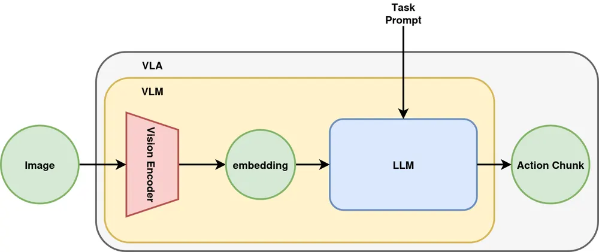
무슨 문제인가
VLA는 고품질 imitation learning 데이터를 많이 필요로 하고, 행동의 결과를 예측하는 명시적인 world model 없이 관측에 반응만 함. 비디오 생성 기반 world model은 pixel 공간에서 예측하므로 과제와 무관한 세부까지 만들어야 함. V-JEPA 2-AC처럼 embedding 공간에서 예측하는 모델은 MPC(model predictive control) 탐색이 비싸고, 추론 때 goal image가 있어야 함. embedding 공간에서 작은 MLP policy를 RL로 처음부터 학습하는 방법은 언어 조건을 다룰 semantic prior가 없음.
어떻게 푸나
아래 단계 중 world model 학습과 그 안의 RL은 아직 하지 않은 계획임. 먼저 π0-FAST와 OpenVLA를 반인간형 협업 로봇 NICOL의 teleoperation 데이터(언어 명령, 카메라 frame, 관절 위치)로 fine-tuning함. 이때 vision encoder는 고정하고, LLM backbone도 대부분 고정해 언어 지식을 지킴. 다음으로 world model을 학습함. 입력은 최근 몇 frame의 observation embedding, 로봇 proprioception, 행동이고 출력은 다음 시점의 embedding임. loss는 pixel이 아니라 embedding 공간의 MSE이고, 학습 데이터는 random action과 expert demonstration을 섞어 씀. 마지막으로 world model을 고정하고 그 안에서 VLA를 PPO로 학습함. reward는 현재 embedding과 goal image embedding 사이 거리의 음수이고, 상상 rollout 길이를 제한하고 policy를 pre-trained prior 근처에 묶어 world model 오차를 악용하지 않게 함. embedding이 물체 mask와 깊이를 담는지 보려고 segmentation probe(mIoU)와 depth probe(RMSE)를 붙이고, 같은 probe를 예측된 embedding에도 적용해 world model drift를 재는 계획임.
결과
- 실험 결과가 없음. 저자 스스로 다음 단계가 world model과 probe 학습이라고 밝힘.
- 성공률, 예측 오차, probe 점수, 실로봇 결과 모두 본문에서 확인 불가함.
- 실험 대신 가설만 제시함: OpenVLA는 DINOv2 기반 encoder라 depth probe 성능이 높고, π0-FAST는 SigLIP에서 출발해 상대적으로 낮을 것이라는 예상임.
한계
핵심 가설인 VLA vision embedding으로 미래를 예측할 수 있는지가 전혀 검증되지 않았음. 저자도 복잡한 장면에서 embedding이 부족할 수 있고, drift 때문에 긴 horizon 계획은 어려우며, embedding 거리 reward가 goal 쪽으로 단조롭게 줄지 않을 수 있다고 인정함. 코드와 프로젝트 페이지 주소는 본문에 없음.
누리랩 연구와의 연결
- VLA를 learned world model 안에서 RL로 다듬는 구상이라 VLA test-time 개선과 world model 연구의 비교 대상 아이디어로는 쓸 수 있음. 다만 실험이 없어 근거로 인용하기는 어려움.
- 예측된 embedding에 segmentation/depth probe를 붙여 world model drift를 재는 평가 방식은 world model 기반 failure detection 실험 설계에 참고할 만함.
오늘의 흐름
- 고정된 VLA를 inference 때 고치기: VLA 가중치는 그대로 두고 내부 표현이나 행동에 보정을 더해 행동을 바꾸는 논문이 셋 나옴. Causeway는 목표 자세 쪽으로 가는 방향을 decoder 미분으로 구해 표현에 더하고, Linear Representation Hypothesis는 그 조작이 왜 통하는지 이론으로 설명하며, VLaRL은 시뮬레이션에서 배운 residual policy를 얹음.
- 실패를 데이터와 신호로 바꾸기: 실패 rollout을 버리지 않고 복구 학습 데이터로 바꾸거나, 실행 중 실패를 영상만으로 판정하는 연구가 나옴. Kintsugi-VLA는 simulator를 되돌려 복구 가능 구간을 재고, RoboMonitor는 라벨 없는 데이터로 monitor를 pre-training함.
- world model을 실행 때 돌리지 않고 학습에만 쓰기: InternW0-Δ는 미래 장면을 학습 때 정답으로만 쓰고 실행 때는 생성하지 않음. VLA-Dreamer는 VLA embedding 공간의 world model 안에서 RL을 하자는 구상만 내놓았고 실험은 없음.
- 3D scene graph를 가볍게 만들기: TRACKGRAPH는 같은 물체인지를 3D 지도 대신 영상 안에서 먼저 추적해 계산량을 줄이고, GraphWrit3R는 작은 LLM 하나가 point cloud나 3DGS에서 scene graph JSON을 바로 써 냄.
- 사람 시연과 다른 로봇의 데이터를 로봇 표현으로 맞추기: VisTacAlign은 사람 손의 영상과 촉각을 로봇 손 표현으로 바꿈. Interaction-Centric Modeling은 gripper 기준 좌표계에서 gripper·쥔 물체·목표 물체만 남겨 로봇 간 이전을 시도함.
해볼 만한 연구
실패 monitor 신호로 inference-time 표현 조작을 언제 켤지 정하기
- 질문: 실패 판정이 뜬 시점에만 표현 조작을 켜면, 항상 켤 때보다 성공률을 유지하면서 실패 판정이 없는 구간의 행동 변화를 줄이는지 밝힘.
- 첫 실험: LIBERO-Goal(시뮬레이션 조작 과제 10개 모음)에서 한 과제 도중 새 과제 지시로 바뀌는 지시 전환 상황을 씀. Causeway를 항상 켜는 경우와 RoboMonitor 방식 실패 판정이 뜰 때만 켜는 경우를 성공률과 실패 판정이 없는 구간의 action 변화량으로 비교함.
- 가장 가까운 연구: Causeway는 개입 시점을 지시 전환 순간으로 정해 두고, RoboMonitor는 판정만 하고 policy를 고치지 않음. 두 단계를 하나로 묶는 점이 다름.
simulator 대신 world model로 복구 가능 구간 추정하기
- 질문: Kintsugi-VLA가 simulator를 되돌려 잰 복구 가능성(recoverability)을 학습된 world model의 상상 rollout으로 얼마나 비슷하게 추정할 수 있는지 밝힘.
- 첫 실험: 같은 실패 rollout 집합에서 simulator 기준 recoverability와 world model 상상 rollout 기준 recoverability의 순위 상관과, 각각으로 뽑은 복구 데이터로 학습한 VLA의 복구 성공률을 비교함.
- 가장 가까운 연구: Kintsugi-VLA는 simulator 상태를 정확히 되돌릴 수 있어야 해서 실로봇에 바로 못 씀. world model로 바꾸면 실로봇 실패 기록에도 쓸 수 있는지가 다름.
action-conditioned probe를 실행 전 실패 예측기로 쓰기
- 질문: VLA 표현과 후보 action chunk에서 물체 높이 같은 위치 변화를 선형으로 읽는 probe가, 실행 전에 실패할 후보를 골라낼 만큼 정확한지 밝힘.
- 첫 실험: 공개 VLA인 OpenVLA-OFT에서 후보 action chunk 여러 개를 뽑고, probe가 예측한 물체 높이로 후보를 고를 때와 무작위로 고를 때의 성공률을 비교함.
- 가장 가까운 연구: Linear Representation Hypothesis는 probe로 행동을 조절하는 데까지만 보였고, 후보 선택이나 실패 예측에는 쓰지 않았음.
꼭 읽을 논문
- Causeway: 과제 도중 새 지시로 바뀌는 상황에서, 학습 없이 고정된 VLA의 성공률을 3.4%에서 64.5%로 올린 inference-time 개입이라 failure recovery 연구에 바로 이어짐.
- InternW0-Δ: 미래 장면 예측을 함께 학습해 action을 내되 실행 때 video를 생성하지 않는 world action model임. 2만 3천 시간 규모의 공개 데이터로 학습했고 정제 데이터와 코드를 공개하겠다고 밝힘.
- Kintsugi-VLA: 실패 rollout에서 복구 가능 구간을 재고 복구 데이터를 뽑는 절차가 구체적임.
- RoboMonitor: 라벨 episode 52개로 단계·실패·완료를 판정하고, 실로봇에서 잡은 실패를 복구로 넘긴 결과까지 잰 monitor임.
- GraphWrit3R: scene graph 생성을 LLM 하나의 JSON 출력으로 바꾸고 3DGS 입력도 받음.